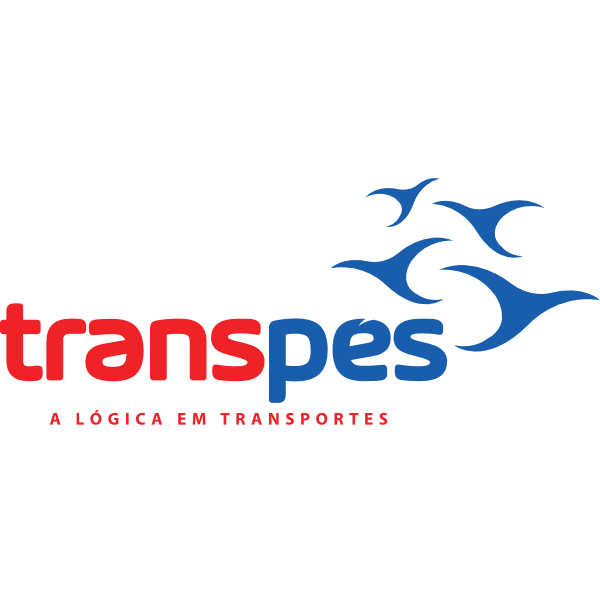

Sistema de Obstáculos Rodoviários
1️⃣ Definir rota
Origem
Destino
Calcular rota
2️⃣ Parâmetros do veículo
Altura do caminhão (m)
3️⃣ Obstáculos
Carregar obstáculos
Verificar obstáculos na rota
Aguardando…
Obstáculos na rota